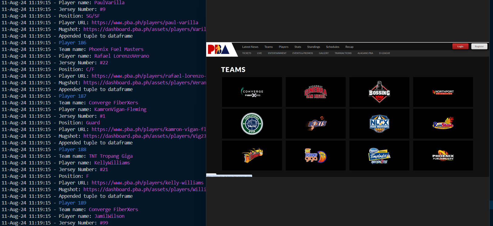
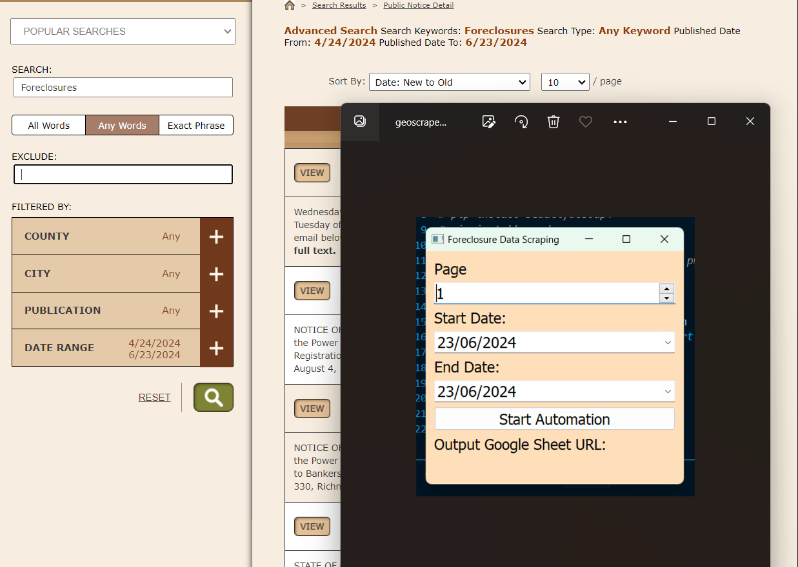
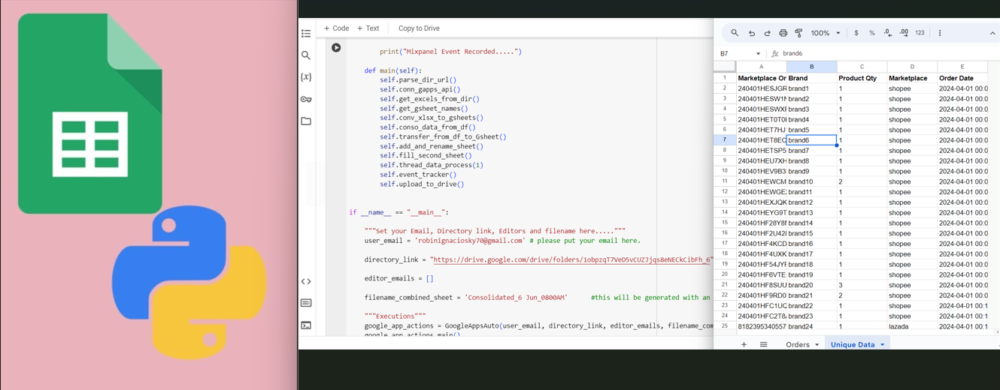
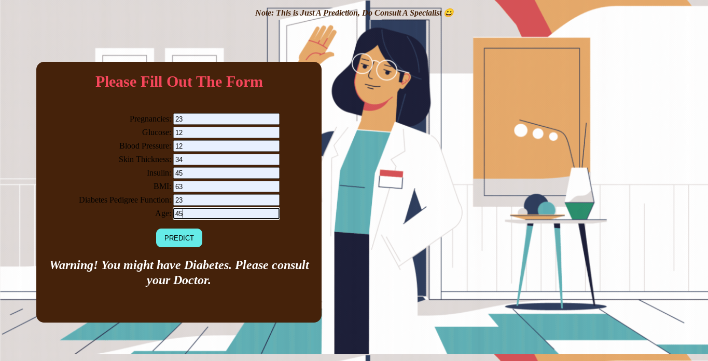
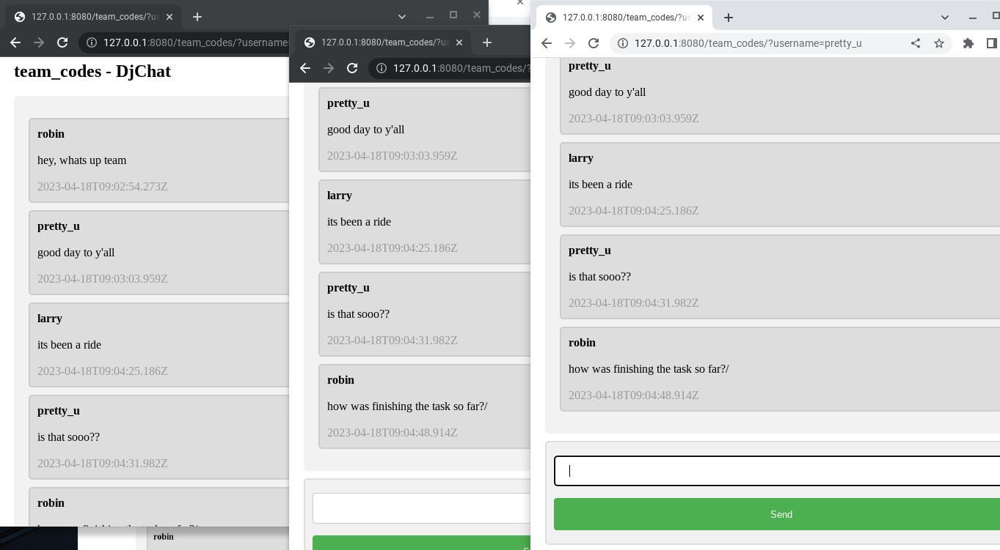
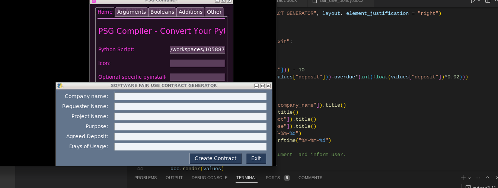
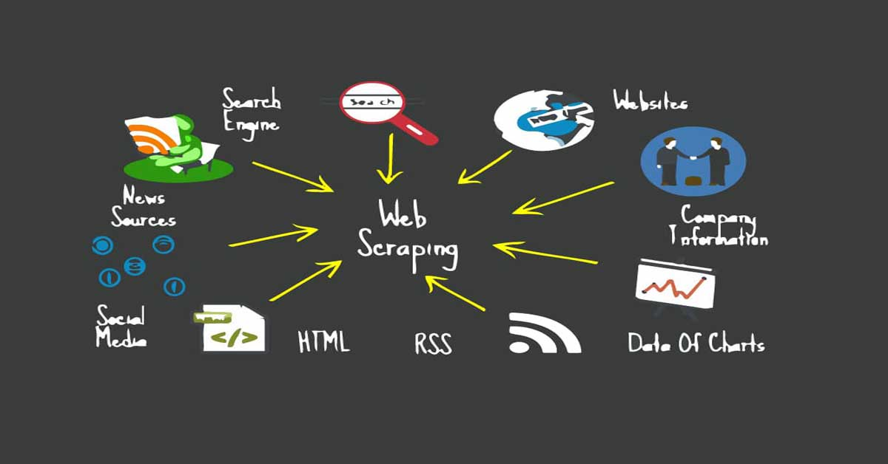
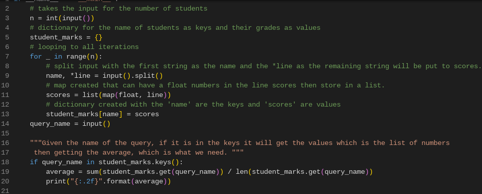

Part of the Photo not mine, Credits:
PBA Site
This project is a robust web scraper designed to extract data from the PBA site with dynamic content. Built using Playwright Async Python and Pandas, this scraper effectively handles two distinct dynamic pages—one dedicated to Players and the other to Teams.
Key Features:
Dynamic Page Handling: The scraper is tailored to navigate and extract data from pages with dynamic content, ensuring accurate and timely data collection.
Technology Stack: Leveraging the power of Playwright Async Python for efficient web scraping and Pandas for data manipulation, the project offers a seamless integration of scraping and data processing.
Data Storage: All scraped data is stored locally within the script directory, making it easy to access and manage.
Easy to Explore: To get started, simply clone the repository and explore the code. The project is structured to be intuitive and straightforward, allowing for easy modification and extension.
Whether you're looking to scrape dynamic web pages or understand the intricacies of using Playwright with Python, this project serves as a practical and insightful example.

This scraping project was assigned by a client from the State of Georgia.
The client is a real estate broker who needs foreclosure listings to use as leads.
The data is from a public notice website that implements a Captcha to prevent scraping activities.
This posed a challenge for our scraper bot.
Additionally, there is a need for a regex-based method of collecting data from public notice documents,
as these documents have a random format for addresses and owner information.
I devised a solution using Playwright solvers that utilize audio processing to solve Google reCAPTCHA V2.
The resulting cleaned data is uploaded to Google Sheets, making the Gspread API necessary for this application.
To learn more, there is a video recording and documentation provided by the developer.
Recorded demonstration is divided into 3 parts:
PART I.
PART II.
PART III.

Automating the merging of brand files generated from the Locad Platform utilizes Google API and Python libraries.
A Google API service account is necessary for this automation, and the script uses an organizational API.
Multiple brands are processed by the users, usually around a hundred thousand rows covered, depending on the range of the report they need.
The script runs on the Google Colab platform, where the user needs to "Make a copy" of the script and edit some inputs.
A README document is provided for developers to test the script.
Please view the recorded
LOOM VIDEO.

Diabetes is a common disease that affects millions of people worldwide. It leads to very destructive complications that we don't want to suffer.
Early detection of this disease will surely help with prevention. Thanks to existing technology nowadays, we were able to predict a diabetic
individual with just the existing data that was previously gathered. A machine learning algorithm was used to train and make predictions for this project.
I used the Django framework for the deployment and to show a fully functional data form as independent and dependent variables. Please click to view the full Github documentation.
repository.

Here is A Realtime Chatapp for you and your friends. The framework that I used was Django with Ajax feature for database updates.
The users can create and join the chatroom with the benefits of seeing realtime messages without reloading the website. I'm going to integrate
some of the code into a much larger project. Please check out this app. To run this on your server please check the documentation in the
repository.

This is a sample Software Fair Use contract form where all entries are automated thru a simple GUI. I used PySimpleGUI and docxtpl for the modules. This a very useful tool in data entry.
Can be used in any docs like Microsoft word and Google docs.

I've created an Automated web scraping to provide a solution for speeding up the data collection process. Once the code is written,
it will get the information you want many times and from many pages.
However, when you try to get the data you want manually, you might spend a lot of time clicking, scrolling, and searching,
especially if you need large amounts of information from websites that are regularly updated with new content.
Manual web scraping can take a lot of time and repetition. PLEASE ACCESS THE URL FOR THE SCRAPED WEBSITE
HERE.

Highlighted here are the solved problems in Hackerrank for Python and SqL.
Data type problems and making queries for database are the majority of the
problems. Other coding exercises from other sites like Codility are also included in this tab.